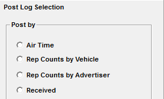
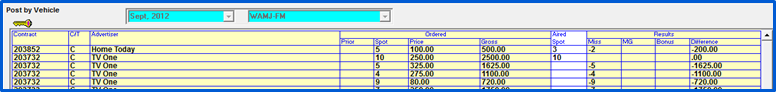
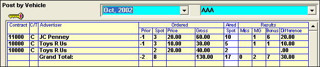
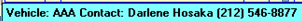
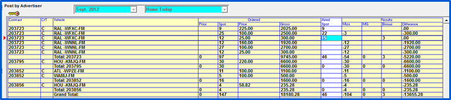
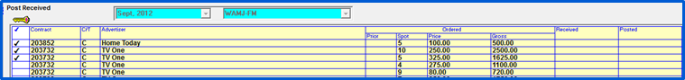

Posting Station Affidavits
Post Log is where you can enter the aired spot counts from the affidavit information the station provided. There are four available methods: by air time, rep counts by vehicle, rep counts by advertiser, and by received.

Each posting method will show the amount of spots ordered for the time period and any spots missed from the previous period. When posting, if more spots aired than were ordered, the extra spots that aired are assumed to be makegoods for the ‘Prior Missed’ spots. These spots will be billed at the ordered line rate. If any extra spots remain after using up all the ‘prior missed’ spots, they will be counted as bonus spots.
Rep Counts by Vehicle

- Select the month and vehicle to post. All the advertisers and their ordered information will be shown.
- Enter the aired spots in the white aired column for those advertisers/contracts you have received from the affiliate. All information in yellow will update automatically.
- If you enter a number other than that that was ordered, the number of missed, and bonus spots are calculated.
- Any revenue differences will be shown.
- When finished, click Save.

When posting an order with Prior Missed spots, the MG column will change to reflect the count of makegoods that will be billed. Once the Prior Missed spots are posted, any extra spots will be counted as bonus spots.
When you Right Mouse on an item, the Vehicle information and the Station Contact will appear.

Note: When the “Post Rep by” setting in Traffic Site Options (Invoice tab) is set to Weekly, when posting rep counts by vehicle, a “station invoice number” field will be shown on this screen. An invoice number can be typed into this field and saved, and this invoice number will be shown on the Barter Payments report and the Barter Payments export for reference.
Rep Counts by Advertiser
Select the advertiser and month, all ordered contracts and vehicles for the month are shown.

If the order has been billed, all the lines will show in green. You cannot change the aired spot counts if this advertiser has been billed.
Enter all of the spot counts per vehicle received for each advertiser.
The user can press the right-mouse button on any line on the screen and see the Received Date, Posted Date, Invoice Date (the date the Print Rep Invoices were generated) and the name and phone number of the station contact for that line.
Post Received

You can indicate that affidavits have been received but not yet posted by clicking the Received posting method, and select the month and vehicle.
Click in the check column to the left of the contract number for each affidavit received, or click “All Received” to mark all contracts as received.
The Unbillable Invoices Report and the Delinquent Affidavit Report will show if the affidavits have been received.